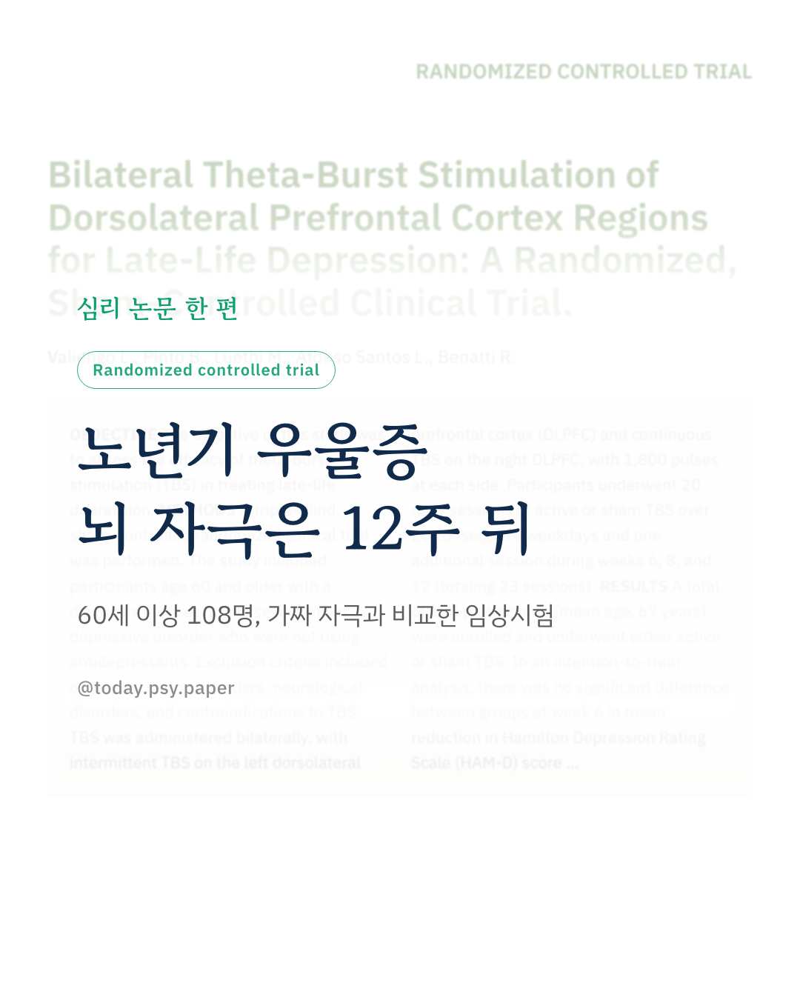
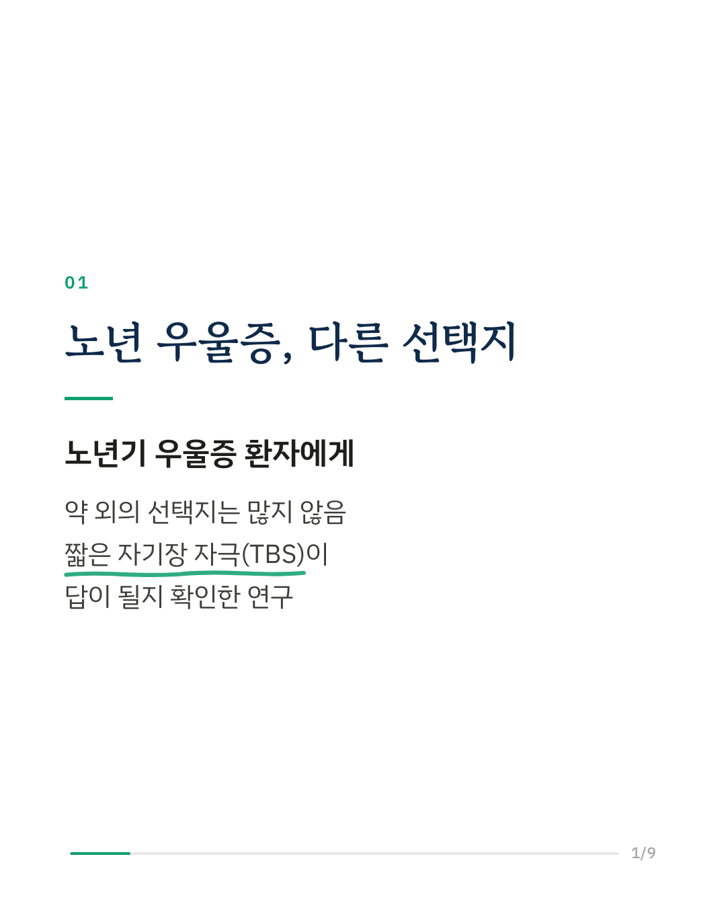
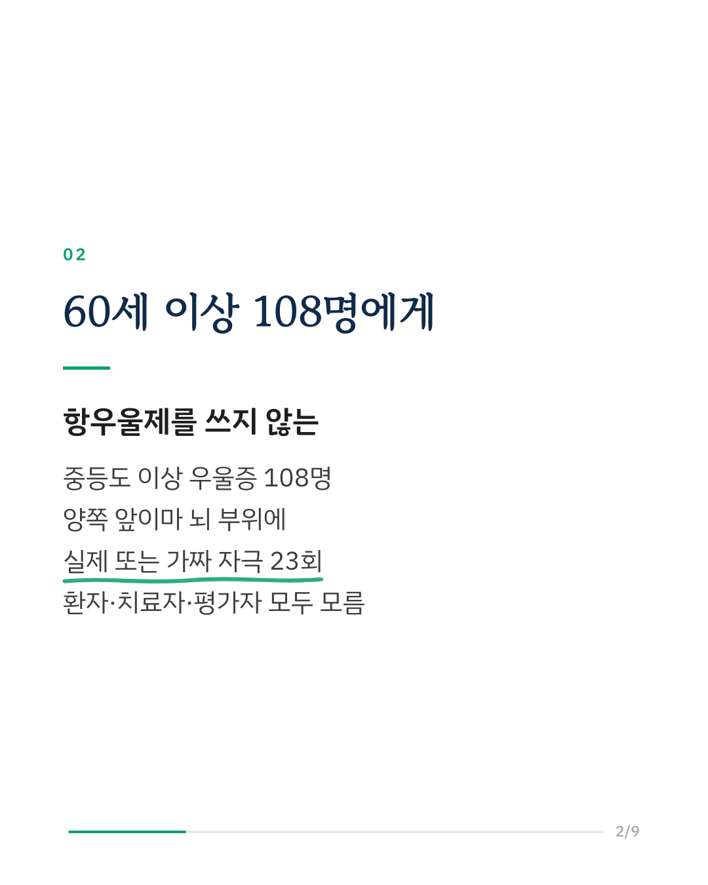
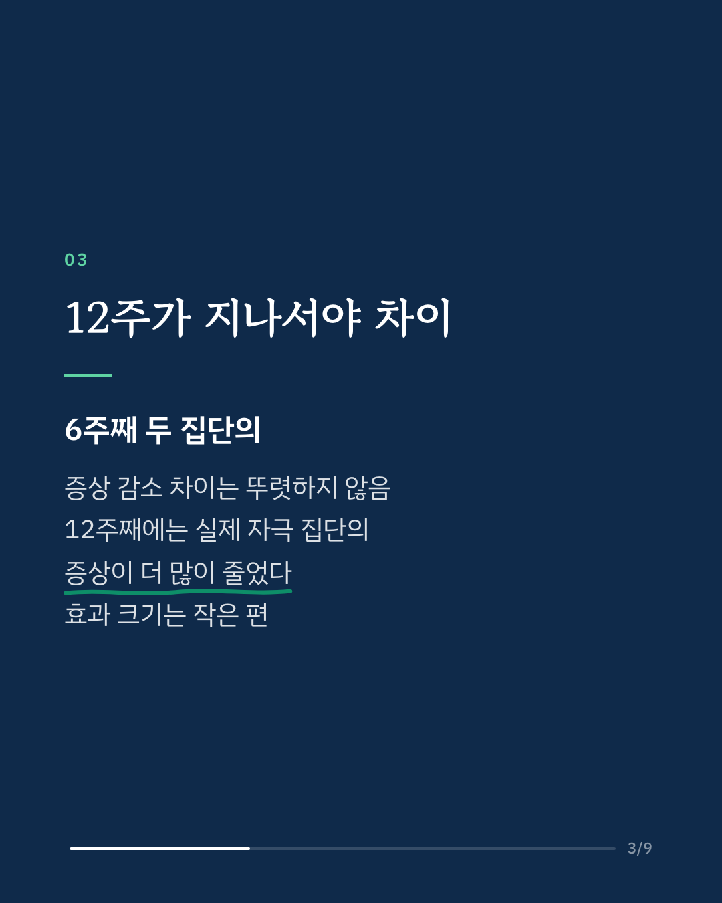
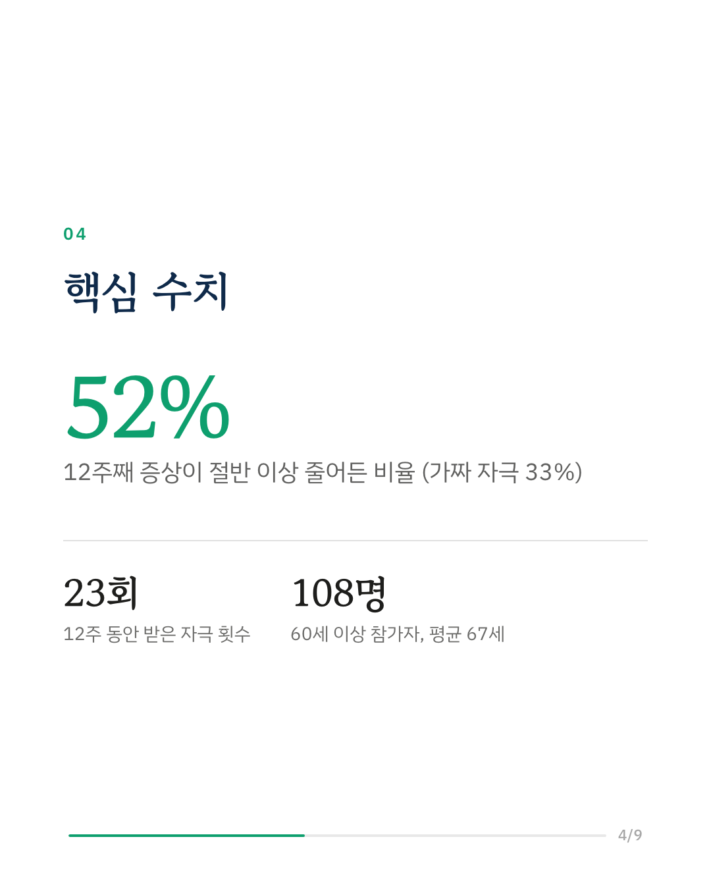
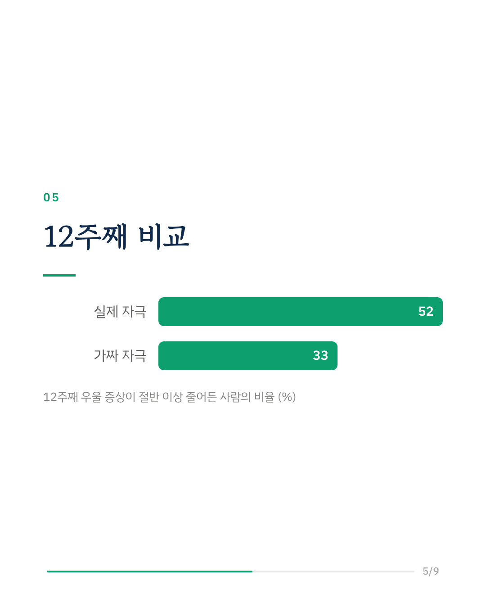
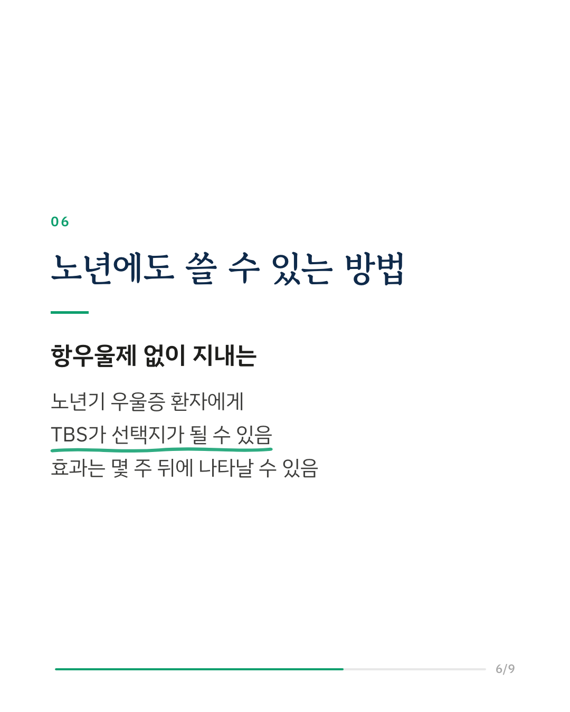
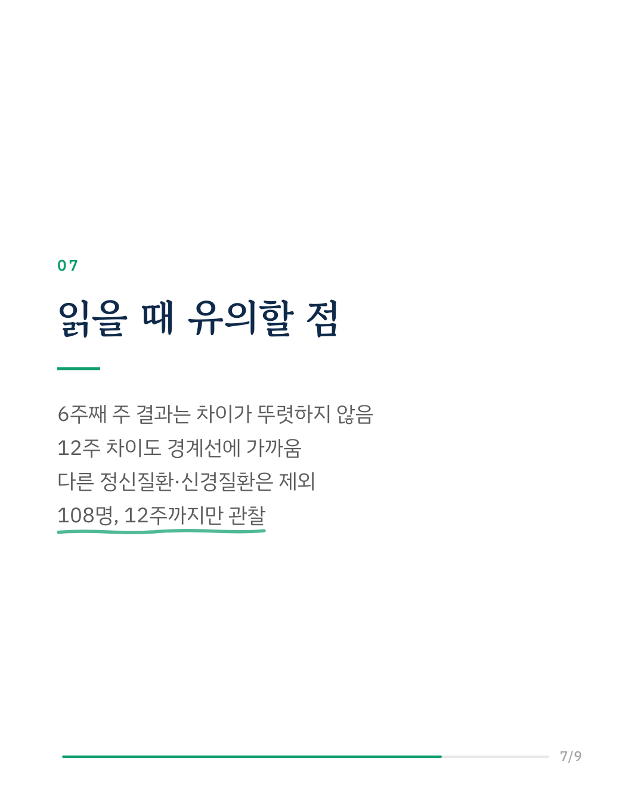
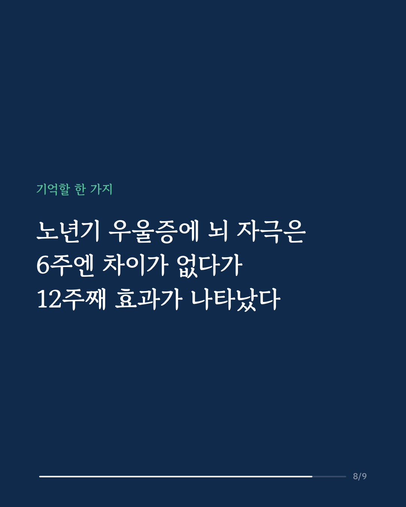
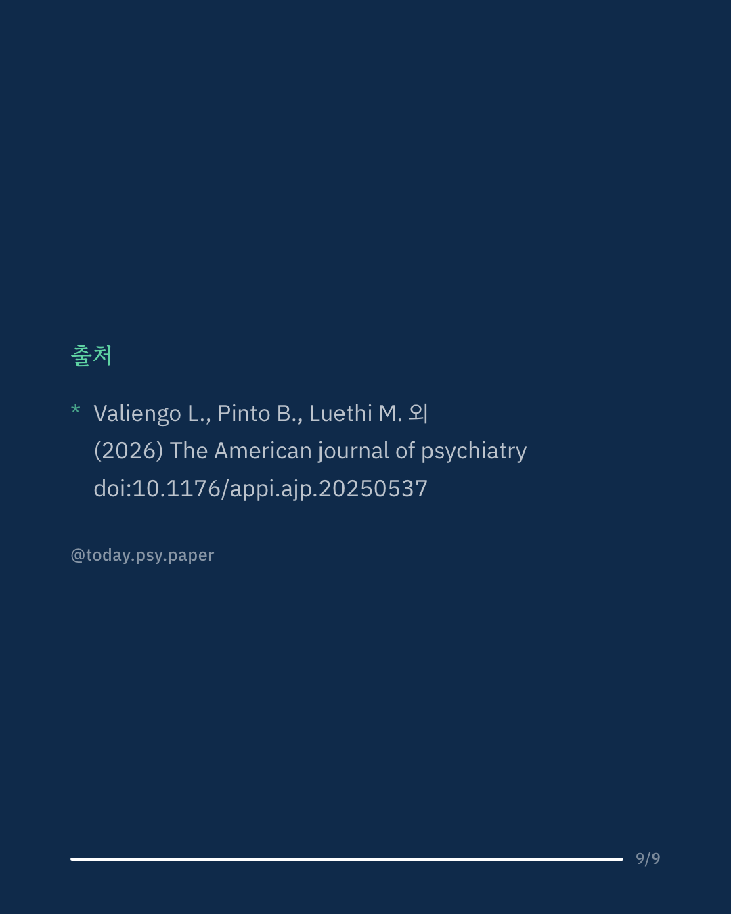

노년기 우울증은 약 외의 치료 선택지가 많지 않습니다. 이 연구는 자기장으로 뇌를 짧게 자극하는 세타버스트 자극(TBS)이 60세 이상 우울증에 효과가 있는지 가짜 자극과 비교한 무작위 임상시험입니다. 항우울제를 쓰지 않는 중등도 이상 주요우울장애 환자 108명(평균 67세)이 참여했습니다. 양쪽 앞이마 부위(배외측 전전두엽)에 실제 또는 가짜 자극을 20일 연속으로 받고, 6·8·12주에 한 번씩 더 받아 모두 23회였습니다. 참가자, 치료자, 평가자 모두 누가 어느 집단인지 몰랐습니다. 6주째에는 두 집단의 우울 점수 감소 차이가 통계적으로 뚜렷하지 않았습니다. 12주째에는 실제 자극 집단의 점수가 가짜 자극 집단보다 더 많이 줄었고, 증상이 절반 이상 줄어든 사람의 비율은 실제 자극 52%, 가짜 자극 33%였습니다. 다만 효과 크기는 작은 편이었습니다. 연구진은 TBS가 노년기 우울증의 선택지가 될 수 있다고 말합니다. 효과가 바로 나타나지 않고 몇 주 뒤에 드러난 것은 이 치료의 효과를 언제 판단할지 정할 때 참고할 부분입니다. 다른 정신질환이나 신경질환이 있는 사람은 제외되어, 여러 질환을 함께 가진 실제 진료실의 노년 환자에게 그대로 적용하기는 어렵습니다. The American Journal of Psychiatry (2026), 'Bilateral Theta-Burst Stimulation of Dorsolateral Prefrontal Cortex Regions for Late-Life Depression: A Randomized, Sham-Controlled Clinical Trial' DOI: 10.1176/appi.ajp.20250537 #임상심리 #정신건강정보 #심리학연구 #논문리뷰 #노년기우울증 #우울증 #뇌자극치료 #경두개자기자극
python3 publish.py 41807319